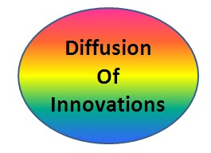

|  |
Diffusion of Innovations
|
Eclectic ModelsTAM-TTF Dishaw and Strong (1999) saw overlap between TAM and TTF, and created a combined model called the TAM-TTF. The combined model had more predictive power than TAM alone. They note significantly that while TAM is a mature theory, TTF was still undergoing evolution and as such the TTF constructs they used should be considered tentative. "Decomposed" TPB Taylor and Todd (1995b) "decomposed" TPB by using constructs from Rogers (1995). They then compared TPB, the "decomposed" TPB, and TAM (Davis, 1989). They found TAM to explain 34% of behavior, TPB to explain 34% of behavior, and "decomposed" TPB to explain a "moderate" increase of 36%. Their conclusion was that additional factors were far more significant, and situation-specific. TAM2 Venkatesh and Davis (2000) studied TAM with additional constructs (Subjective Norm, Experience, Image, Job Relevance, Output Quality, and Result Demonstrability) to explain Perceived Usefulness, in four longitudinal studies. They found Subjective Norm consistently lost impact as experience grew. Perceived usefulness was impacted directly by Subjective Norm, Image, Job Relevance, and Result Demonstrability. Experience negatively moderated Subjective Norm, and Output Quality positively moderated Job Relevance. Subjective Norm impacted Intention to Use, but Intention to Use explained only 52% of variation in Usage Behavior. |